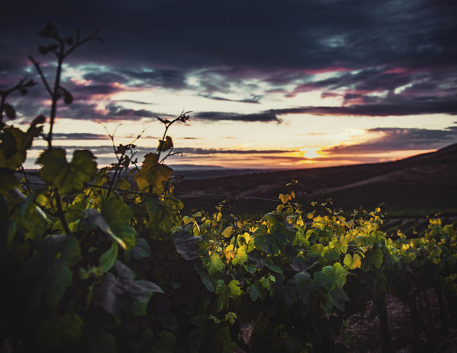
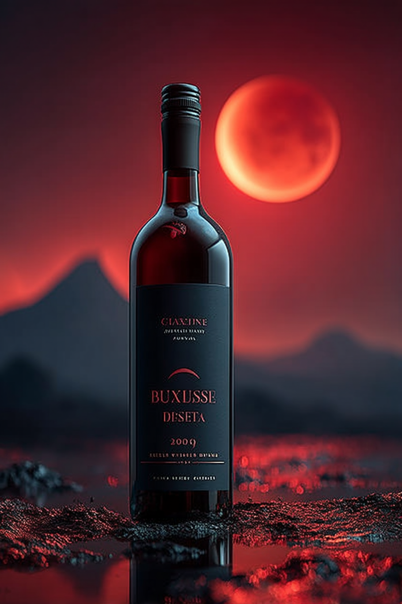
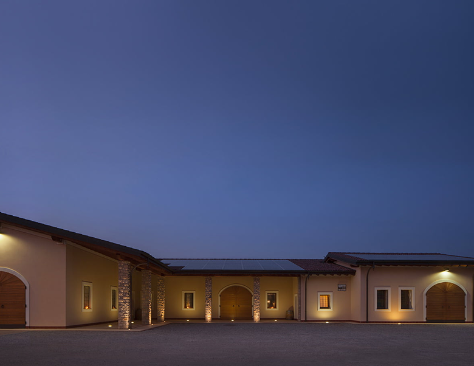
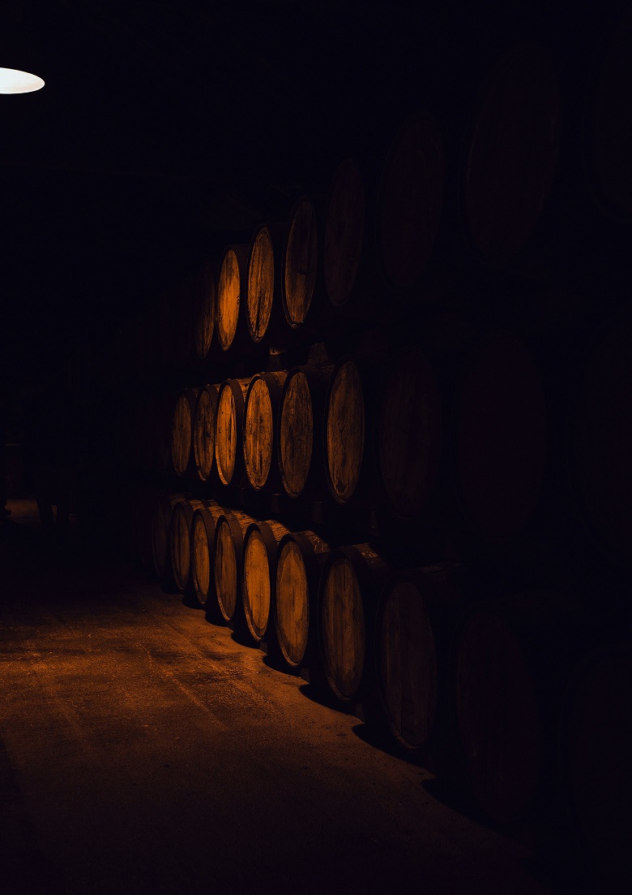

Questa esperienza è dedicata a chi ha già raggiunto la maggiore età. Confermi di avere più di 18 anni?
Un'annata che si rivela sorso dopo sorso.
Sulle colline più segrete della Toscana meridionale, dove il suolo vulcanico incontra le brezze del Mar Tirreno, nasce Eclissi di Seta. Qui il terreno regala ai grappoli una vena sapida e minerale, il respiro salmastro del mare, la pietra ancora calda di sole, che si fonde con la potenza del frutto toscano.

65% Sangiovese Grosso, per la struttura e l'anima italiana. 25% Cabernet Franc, per l'eleganza scura e vellutata. 10% Ancellotta, un tocco segreto che dona colore profondo e morbidezza d'altri tempi.
Annata 2019, un'annata da manuale: inverno mite, primavera misurata, estate calda e ventilata. Le notti fresche di settembre hanno scolpito un equilibrio perfetto tra zucchero e acidità.
Vendemmia manuale e notturna, nella prima settimana di ottobre: i grappoli selezionati uno a uno al chiaro di luna, per preservare freschezza e profumi primari.
Affinamento: 20 mesi in barrique di rovere francese a tostatura leggera, seguiti da 14 mesi di riposo in bottiglia.
Sorso monumentale ma di estrema finezza. Tannino levigato come velluto, acidità fresca, finale interminabile di liquirizia e legno di sandalo.

Eclissi di Seta richiede piatti di pari intensità: filetto di cervo in crosta di erbe con riduzione di mirtilli e cioccolato fondente, un grande brasato, una fiorentina frollata 60 giorni. Da meditazione, a fine serata, con un sigaro d'autore e Parmigiano Reggiano oltre i 40 mesi.

